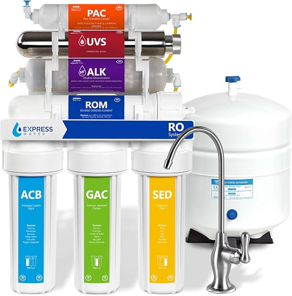

Express Water Reverse Osmosis Review 2026: 5-Stage, ROALK10D, ROALKUV10D Compared
PureFlow Lab is reader-supported. We may earn a commission when you buy through links in this guide — at no extra cost to you. As an Amazon Associate, we earn from qualifying purchases. See our Disclosure for details.
Top Picks (At a Glance)
The Express Water models covered in this overview, organized by use case. PureFlow Lab does not test products; specs below come from each product’s Amazon listing or from Express Water.

Express Water 5-Stage RO — 50 GPD, Leak Detector Included
A conventional 5-stage, 50 GPD tank-based system with a 3.2-gallon tank and chrome faucet, per the listing. No electricity required. An extra filter set and a leak detector are included. The listing title says “NSF Certified” but doesn’t name the standard.
Check Price on Amazon →
Express Water ROALK10D — 10-Stage Alkaline, 100 GPD
10-stage tank-based system with alkaline remineralization and a 100 GPD rating, per the listing. A leak stop detector is included, with a 1-year warranty. The pick if you want minerals added back and faster tank refills than a 50 GPD system.
Check Price on Amazon →
Express Water ROALKUV10D — 11-Stage Alkaline + UV
Adds a UV stage on top of alkaline remineralization: 11 stages, tank-based, leak detector included, 1-year warranty, per the listing. UV matters most for water that isn’t already disinfected, such as many private wells.
Check Price on Amazon →
Express Water Countertop RO — Faucet Attachment
For renters and anyone who can’t drill. Per the listing it attaches to faucets with a threaded, removable aerator (not sprayer faucets), has 4 stages, produces 0.5–1 gallon per hour, and has a 1:3 pure-to-drain ratio.
Check Price on Amazon →TL;DR: Express Water is a budget-focused brand of conventional, tank-based reverse osmosis systems. Where Waterdrop focuses on tankless systems with smart faucets, Express Water sells tank-based systems, and several of its listings include a leak detector in the box. For most homes, the Express Water 5-stage RO (50 GPD, extra filter set and leak detector included, no electricity) covers drinking and cooking water. If you want minerals added back and faster refills, the ROALK10D is a 10-stage alkaline system rated at 100 GPD. Well-water owners should look at the ROALKUV10D for its UV stage. Renters who can’t install under-sink can consider the Express Water Countertop RO. Express Water does not make a whole-house RO system — for that, see our best whole house RO guide.
If you’ve shopped reverse osmosis on Amazon, you’ve likely seen Express Water. This page is a research-based overview of its RO lineup, built from the product listings: what each model is documented to include, the trade-offs, and which model fits which household.
About Express Water
Express Water sells water filtration systems, including under-sink and countertop reverse osmosis, largely through Amazon. Its RO lineup is conventional tank-based technology rather than tankless or app-connected designs.
What the listings document across the lineup:
- Tank-based, no electricity for the basic models. The 5-stage system’s listing says no electricity is required. (The UV model’s UV stage needs power.)
- Leak detectors in the box. The 5-stage, ROALK10D and ROALKUV10D listings all include a leak detector. That’s a useful extra that many tank-based competitors don’t include. Express Water also sells a separate mechanical Leak Stop Valve that shuts off the supply when its pads detect moisture.
- Alkaline and UV variants. Models with “ALK” in the name add an alkaline remineralization stage; “UV” adds an ultraviolet stage.
- Extra filters and warranty. The 5-stage listing includes an extra filter set; the ROALK10D and ROALKUV10D listings state a 1-year warranty.
What Express Water doesn’t offer here: tankless systems, smart features (app or TDS display), or whole-house RO. For tankless and smart, look at Waterdrop. For whole-house RO, see our best whole house RO guide.
The Express Water Lineup Explained (Decoding the Names)
Express Water’s model names describe what’s inside:
- RO = the base reverse osmosis system.
- ALK = an alkaline remineralization stage is included (adds minerals back after the RO membrane).
- UV = an ultraviolet stage is included.
- The number (for example 10 in ROALK10D) roughly tracks the stage count.
So the ROALK10D is a 10-stage alkaline system, and the ROALKUV10D is RO plus alkaline plus UV (11 stages). Some older models (such as the RO5DX, ROALK5D and ROALKUV10M) are no longer available on Amazon; the systems covered here are the current listings.
Top Picks Detailed
Best Overall: Express Water 5-Stage RO (50 GPD)
The Express Water 5-stage RO system is the simplest Express Water pick and a reasonable default for most homes. Per the listing, it is a 5-stage, 50 GPD tank-based system with a 3.2-gallon tank and a chrome faucet, and it needs no electricity. It comes with an extra filter set and a leak detector.
The listing title says “NSF Certified” but doesn’t say which standard. If a named certification matters to you, ask Express Water which NSF/ANSI standard applies (NSF/ANSI 58 is the RO performance standard), or compare the iSpring RCC7AK, whose listing states whole-system NSF/ANSI 58 certification.
The trade-offs are the standard tank-based ones: the storage tank takes under-sink cabinet space, and a 50 GPD membrane refills the tank more slowly than a higher-rated system. For a typical household’s drinking and cooking water, 50 GPD is usually enough.
Pros: Leak detector and extra filter set included, no electricity required, simple 5-stage design. Cons: Tank-based (takes cabinet space), 50 GPD refills more slowly, no alkaline stage, the NSF standard isn’t named on the listing.
Best Alkaline: Express Water ROALK10D (10-Stage Alkaline, 100 GPD)
The Express Water ROALK10D adds alkaline remineralization. A common complaint about RO water is that it tastes flat, because the membrane removes dissolved minerals such as calcium and magnesium along with contaminants. The alkaline stage adds some minerals back.
Per the listing, it has 10 stages, a 100 GPD rating, a leak stop detector included, and a 1-year warranty. A 100 GPD rating means the tank refills faster than on a 50 GPD system, which helps larger households.
Pros: Alkaline remineralization, 100 GPD rating, leak stop detector included, 1-year warranty. Cons: Tank-based, more filters to replace over time than a basic 5-stage system, the listing doesn’t state an NSF/ANSI 58 certification.
Best for Well Water: Express Water ROALKUV10D (11-Stage Alkaline + UV)
The Express Water ROALKUV10D adds an ultraviolet stage on top of alkaline remineralization: 11 stages, tank-based, leak detector included, 1-year warranty, per the listing. The listing title doesn’t state a GPD rating.
UV adds a disinfection step aimed at microorganisms. City water is already disinfected, so UV is mostly relevant for untreated sources such as private wells. If you’re on well water, get it checked by a certified lab first and read our whole house RO guide: a point-of-use UV-RO system handles drinking water, but well water often needs upstream treatment (sediment, iron, sometimes a softener) to protect any RO membrane.
Pros: UV stage for untreated water, alkaline remineralization, leak detector included, 1-year warranty. Cons: UV stage needs an outlet and a lamp to maintain, GPD not stated on the listing, well water may need pre-treatment the system doesn’t include.
Best No-Plumbing Option: Express Water Countertop RO
The Express Water Countertop RO is the pick for renters or anyone who can’t drill into cabinets and countertops. Per the listing, it attaches to faucets that have a threaded, removable aerator (it doesn’t work with sprayer faucets), has 4 stages, and produces 0.5–1 gallon per hour.
The key trade-off is wastewater: the listing gives a 1:3 pure-to-drain ratio, meaning roughly three gallons go to the drain for each gallon of purified water. Output is also slow compared with an under-sink system. If you can’t install under-sink and wastewater matters to you, compare the AquaTru countertop models or other countertop RO units that don’t connect to the faucet.
Pros: No drilling or under-sink plumbing, removable when you move. Cons: 1:3 pure-to-drain ratio, 0.5–1 gallon per hour, doesn’t fit sprayer faucets, sits on the counter.
What Sets Express Water Apart
Three things distinguish Express Water on paper:
1. Leak detectors included. The 5-stage, ROALK10D and ROALKUV10D listings all include a leak detector. Under-sink leaks are the main installation risk with any RO system, so it’s a practical extra.
2. Simple, tank-based systems. Conventional stages and no electronics on the non-UV models mean no outlet is needed under the sink.
3. Budget positioning. Express Water competes mainly on price. Check current prices against the APEC and iSpring equivalents before deciding.
What Express Water Could Do Better
Three weaknesses to weigh:
1. Everything here is tank-based. The storage tank takes up cabinet space, and tanks need periodic sanitizing. If cabinet space is tight or you want water on demand, Waterdrop is the brand to look at.
2. Certification claims are thin. The 5-stage listing says “NSF Certified” without naming the standard, and the ROALK10D and ROALKUV10D listings don’t state an NSF/ANSI 58 certification. By comparison, the Waterdrop G3P600 lists NSF/ANSI 58 and 372, and the iSpring RCC7AK lists whole-system NSF/ANSI 58.
3. No smart features and no whole-house RO. No app and no TDS display. Express Water’s whole-house product is a 3-stage whole-house filter (chlorine, heavy metals, polyphosphate anti-scale, stainless frame and pressure gauges, per the listing), which is a different category from reverse osmosis; per Express Water, whole-house systems don’t reduce TDS. For whole-house RO, see our best whole house RO systems guide.
Express Water vs Competitors
vs Waterdrop G3P600: The central comparison: budget tank vs tankless. The Waterdrop G3P600 is a 600 GPD tankless system with a 2:1 pure-to-drain ratio, certified to NSF/ANSI 58 and 372 and “tested and certified against NSF 42” per the listing, with a smart faucet that shows TDS and filter life. It needs an outlet under the sink. The Express Water 5-stage is a 50 GPD tank system with a leak detector and no electricity. Compare current prices; see our Waterdrop overview.
vs iSpring RCC7AK: The iSpring RCC7AK is the closest tank-based alkaline competitor to the ROALK10D: 6 stages, 75 GPD, alkaline stage, certified to NSF/ANSI 58 for the whole system, and a top-mounted faucet that installs from above, per the listing. The ROALK10D counters with a 100 GPD rating and an included leak detector.
vs APEC ROES-50: The APEC ROES-50 is another 5-stage, 50 GPD tank system; per APEC, the company has been in business for more than 20 years. Its listing makes no NSF claim and doesn’t mention a leak detector. Compare current prices and what’s in the box.
vs AquaTru (countertop): If you’re comparing the Express Water Countertop RO, the AquaTru Classic is a standalone countertop unit (no faucet connection) tested and certified by IAPMO to NSF/ANSI 42, 53, 58, 401 and P473, per its listing.
For the full multi-brand comparison, see our best reverse osmosis systems guide.
Comparison Table
| Model | Type | Stages | GPD | Certification claim (per listing) | Standout Feature |
|---|---|---|---|---|---|
| 5-Stage RO | Tank (under-sink) | 5 | 50 | “NSF Certified” (standard not named) | Leak detector + extra filter set |
| ROALK10D | Tank (under-sink) | 10 | 100 | None stated | Alkaline + 100 GPD, leak detector |
| ROALKUV10D | Tank (under-sink) | 11 | Not stated | None stated | Alkaline + UV (well water) |
| Countertop RO | Countertop (faucet attachment) | 4 | 0.5–1 gal/hour | None stated | No plumbing; 1:3 pure-to-drain |
Buyer Scenario Decision Matrix
Match your situation:
| Your Situation | Right Express Water Pick | Why |
|---|---|---|
| First RO system, want something simple | 5-Stage RO | 50 GPD, leak detector and extra filters included |
| Want minerals added back and faster refill | ROALK10D | Alkaline stage, 100 GPD |
| On well water or another untreated source | ROALKUV10D | Adds a UV disinfection stage |
| Renting / can’t drill cabinets | Countertop RO | Attaches to a faucet with a threaded aerator |
| Want tankless + smart features | Look at Waterdrop instead | Express Water’s systems here are tank-based |
| Want a named NSF/ANSI 58 certification | Compare the iSpring RCC7AK | Whole-system NSF/ANSI 58 per its listing |
| Want RO at every tap in the house | Look elsewhere — Express Water has no whole-house RO | See our best whole house RO guide |
| Want a countertop unit that doesn’t attach to the faucet | Compare the AquaTru | Standalone countertop RO |
FAQ
Is Express Water a good reverse osmosis brand?
Express Water is a budget-focused brand of conventional tank-based RO systems, and several of its listings include a leak detector and extra filters. The main trade-offs: everything here is tank-based, there are no smart features, and certification claims on the listings are thin (the 5-stage says “NSF Certified” without naming the standard). PureFlow Lab does not test products; compare the listing details against alternatives such as the iSpring RCC7AK.
What’s the difference between the Express Water 5-stage and the ROALK10D?
The 5-stage system is a basic 50 GPD RO system with a leak detector and extra filter set. The ROALK10D has 10 stages including alkaline remineralization and a 100 GPD rating, with a leak stop detector and a 1-year warranty. If you’re happy with plain RO water and a 50 GPD rate, the 5-stage is enough; if you want minerals added back or faster refills, choose the ROALK10D.
Does Express Water remove fluoride?
Reverse osmosis membranes generally reduce fluoride, which standard carbon filters don’t do well. The Express Water listings covered here don’t publish fluoride-specific performance data, so if fluoride is your main concern, look for a system whose performance data sheet or certification lists fluoride reduction, and confirm with a water test after installation.
Do I need the UV model (ROALKUV10D)?
Mostly if you’re on well water or another untreated source. City water is already disinfected, so a UV stage is usually unnecessary there. For a private well, test the water, and consider a UV-equipped system such as the ROALKUV10D. On city water, the 5-stage or ROALK10D is typically enough.
How hard is Express Water installation?
Under-sink RO is a common DIY project, but it involves connecting to the cold-water supply, adding a drain connection, and usually drilling a hole in the sink or countertop for the RO faucet. Stainless sinks can be drilled with the right bit; granite or quartz needs a diamond hole saw used wet at low speed, or a plumber for that step. The included leak detector is worth installing. If you can’t drill at all, the Express Water Countertop RO is the no-drill option.
How much do Express Water replacement filters cost?
Filter prices change, so check the current price of the replacement set for your model before you buy the system. The 5-stage listing includes an extra filter set, which covers your first replacement. UV models also have a lamp to replace; check Express Water’s schedule.
Does Express Water make a whole-house reverse osmosis system?
No. The Express Water RO systems covered here are point-of-use (under-sink or countertop). Its whole-house product is a 3-stage whole-house filter for chlorine, heavy metals and scale (polyphosphate), which is not reverse osmosis; per Express Water, whole-house systems don’t reduce TDS. For true whole-house RO, see our best whole house RO systems guide.
Where is Express Water made?
The listings covered here don’t state where the systems are made or assembled. If country of origin matters to you, check the listing’s product details or ask Express Water before buying.
Bottom Line: Which Express Water Should You Buy?
For most homeowners: the Express Water 5-stage RO. A simple 50 GPD tank system with a leak detector and an extra filter set included.
If you want minerals added back or faster refill: the ROALK10D (10-stage alkaline, 100 GPD, leak stop detector included).
If you’re on well water: the ROALKUV10D adds a UV stage. Test your water and treat iron or sediment upstream.
If you’re renting or can’t drill: the Express Water Countertop RO attaches to your faucet with no plumbing, but note its 1:3 pure-to-drain ratio.
If you want tankless, smart features, whole-house RO, or a named NSF/ANSI 58 certification: look elsewhere. See our Waterdrop overview for tankless, our iSpring overview for NSF/ANSI 58 tank systems, or our best whole house RO guide.
Ready to buy?
Check current pricing on whichever Express Water system fits your situation. Prices move, so compare the model you want against the next tier up. Your clicks keep these guides free.
Shop All Express Water RO Systems on Amazon →
Found this useful? Share it with someone shopping budget RO systems.
Keep Reading
- Best Reverse Osmosis Systems for Home — Express Water compared against the main competitors
- Waterdrop Reverse Osmosis Review — the tankless alternative
- AquaTru Reverse Osmosis Review — a standalone countertop brand
- Best Countertop Reverse Osmosis Systems — where the Express Water countertop unit fits
- Culligan Reverse Osmosis Review — the dealer-sold alternative
- APEC vs iSpring vs Waterdrop — Express Water’s main under-sink competitors
- Best Whole House Reverse Osmosis Systems — for whole-house RO (Express Water doesn’t make these)
- Whole House RO vs Under-Sink RO — decision framework
- Whole House RO Cost Guide — what drives the cost